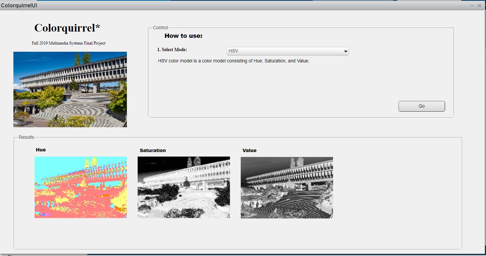
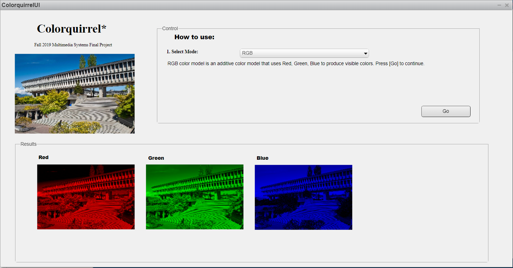
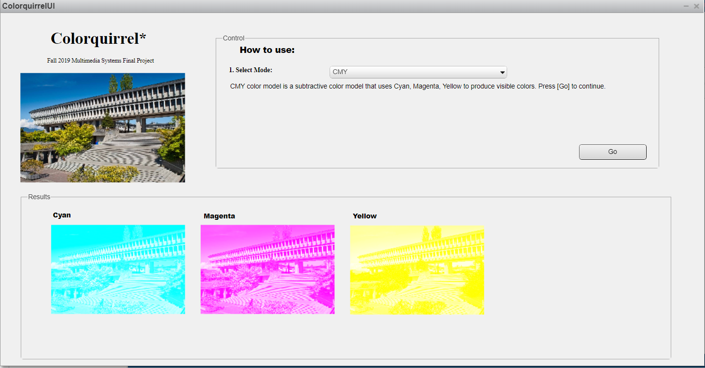
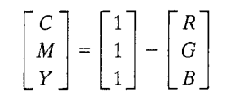
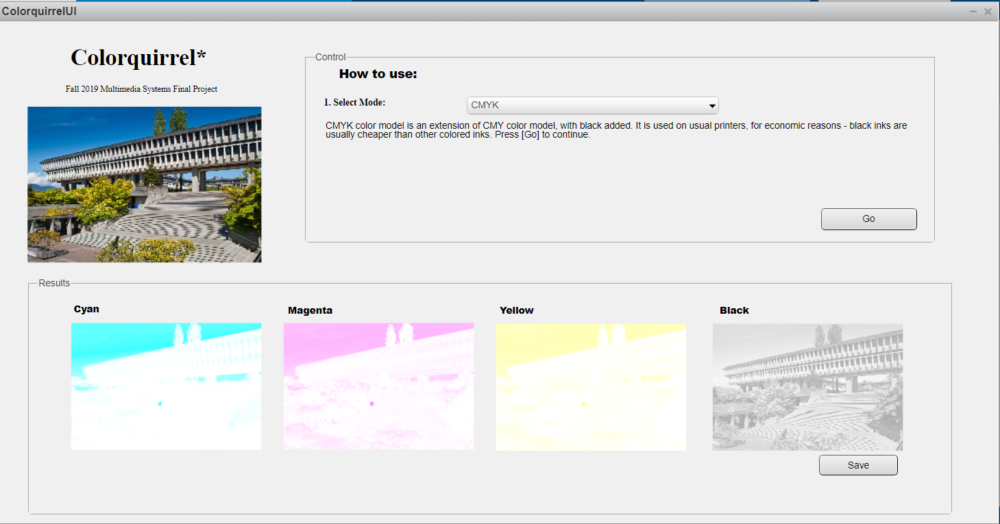
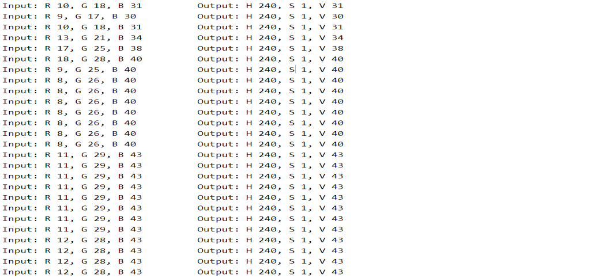
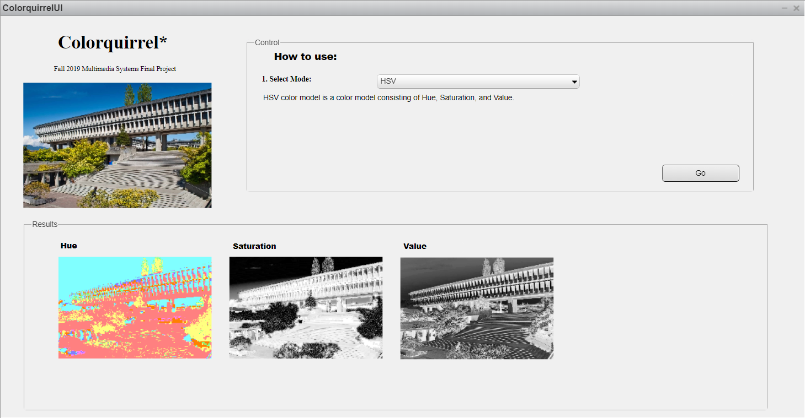
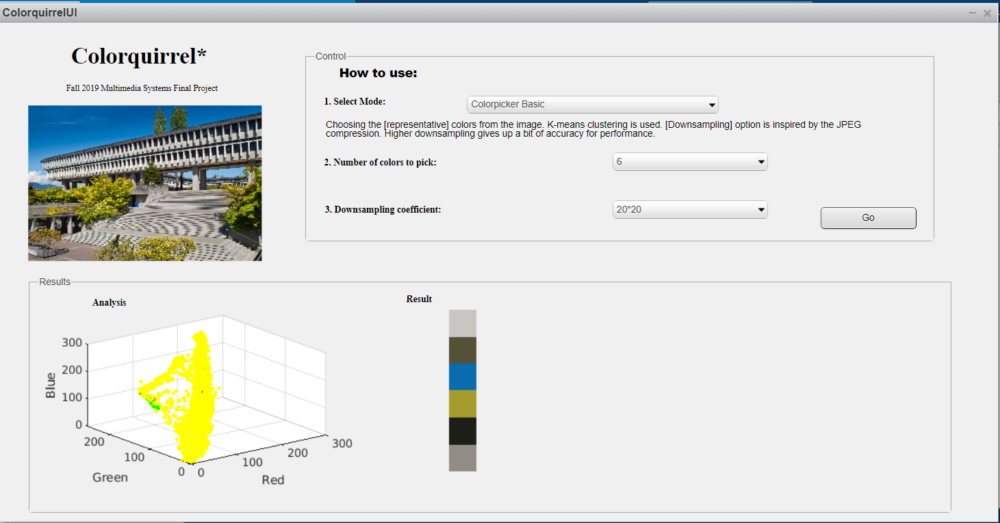

ColorQuirrel
ColorQuirrel
Motivation
ColorQuirrel is my individual final project for SFU CMPT 365: Multimedia Systems for Fall 2019. It was planned to be [1] Course-related, [2] Available for incremental development, [3] Easy to check middle results, and [4] Contain enough depth as a final project for 300-level course.
ColorQuirrel is a MATLAB based program that plays around color spaces. It converts the image to several different ways to represent the data, extracts the representative color from the image by clustering the data, and uses down-sampling method to speed up the procedure.
Below is the description for my project.
Instructions on running the program (General):
- Run Colorquirrel.m on MATLAB (version at least R2018).
- When “Enter image path:” shows, enter the source path of the image with quotation marks ‘ ’ appended. (If quotation marks are not included, the program returns an error.)
- Select the mode. (If it doesn’t do anything, select any other mode and select again.) 4) If there are options available, choose the desired option. Otherwise, select ‘Go’.
1. Basic implementation of color space conversions.
1.1. RGB [Replication of existing idea]
RGB color space is how the pictures are shown on monitors. In this feature, I focused on implementing the very basic feature to the GUI. The idea was very simple, but I spent most of the time on trial-and-errors, involving languages, understanding the GUI, and dealing with MATLAB data types, uint8 and double.
The program starts from reading the file. This step is done by MATLAB’s built-in imread function.
For dividing the RGB images, I used the way MATLAB deals with pixel images. I made 3 new matrices, each for R, G, and B, each taking only the needed entries from the original image. Then I showed the image using the built-in imshow function.
1.2. CMY [Replication of existing idea]
CMY color space is the subtractive color space. It is also how pictures are shown on printed papers – it is actually CMYK, but CMYK is made after CMY.
The procedure is as follows:
- Convert RGB to CMY. There exists a built-in function in MATLAB, but I wrote my own for project purpose. The formula was easy to obtain: 
- Generate 3 new matrices to contain each C, M, and Y, as done in 1.1.RGB.
- Convert each matrices to RGB color space. The inverse formula was obvious. There is also a built-in function in MATLAB, but I wrote my own for project purpose again.
1.3. CMYK [Replication of existing idea]
CMYK color space is an economic form of CMY color space. It is made because black ink is usually cheaper than other colors.
The procedure is as follows:
- Perform a CMY color space conversion, as done in 1.2. CMY.
- Make a new matrix, with a fourth entry on each pixel. The fourth entry contains the minimum value among R, G, B of that specific pixel. Subtract the fourth entry from all other colors. This way, the smallest entry becomes 0.
- For displaying on the GUI, I processed the C, M, Y components as before. More specifically, the values for R, G, B are set to 255-(original), and non-used components are all set to 255. For K component, I made a new RGB matrix, and set all R/G/B values as 1/3 of the K value.
1.4. HSV [Replication of existing idea]
HSV color space is less obvious than CMY or CMYK. Some of the formulas I got from google didn’t consider the range of entries (sometimes R/G/B was mapped on [0, 1]; other times they were [0, 255].), so I had a few trials and errors on this part.
(*This is one of the ‘wrong’ results the program produced while running. It is very non-obvious to check.)
The procedure was as follows:
- Convert RGB to HSV. I wrote my own function for it. I obtained the formula from: https://www.rapidtables.com/convert/color/rgb-to-hsv.html
- Since HSV entries per pixel are dependent to each other, they cannot be divided into three different images. In fact, dividing Hue-Saturation-Value of the image doesn’t really make sense. So I used the trick:
- For Hue, I made a new matrix with same hue, but all Saturation set to 0.5 and all Values set to 1. (Saturation 0 or 1 will be black/white image with no useful information, and high Value makes colors more intense.) Then I ran the HSV to RGB (own function) to that image: formula obtained from https://cs.stackexchange.com/questions/64549/convert-hsv-to-rgbcolors
- For Saturation and Value, I multiplied 255 and rounded the number, since the original is a floating point number in [0, 1] and I wanted a grayscale image. Then I saved the data to the fourth entry of CMYK image, with all other entries set to 0. Lastly I converted CMYK->CMY->RGB, and obtained the display-able image.
2. Color extractor
Color extraction from a photo is commonly used by artists, who needs inspiration for colors and moods. The idea is simple: Get a ‘representative’ color from a photo.
2.1. Trials and errors
For the most straightforward method, I decided to make a 256*256*256 ‘container’ that stores frequencies of colors, and extract the most frequent values of the container; which is also the most frequent colors of the image.
This turned out to be not the feature intended. Usually the colors were in a very narrow range, almost non distinguishable, for obvious reasons.
2.2. Colorpicker (k-means clustering)
[Replication of existing idea] [Original solution]
The alternative method is k-means clustering. MATLAB built-in program imsegkmeans was used for clustering the colors. The program reads the color data, and clusters the data to the chosen number of clusters.
This turned out very well, with expected results. The scatterplot on the left is the distribution of colors. Red circles are where the selected colors are located.
Procedure was as follows:
- Obtain the ‘mean’s of cluster by MATLAB function. The output data is returned as a k*3 matrix, each row containing R, G, B values of representative colors.
- To display the ‘palette’, generate a 1*k*3 matrix, which is the size of the palette image. Assign each values of the color entries to the palette.
- The scatterplot, showing the distribution of colors and the location of palette images, is drawn using the idea from 2.1. Trial and errors; all the image elements are saved into the containers, and scatterplot is drawn on 256*256*256, each representing R, G, B parameters.
- Red circles on the plot are the ‘representative’ colors shown on the palette. They are drawn after the whole scatterplot is drawn. This plot provides an intuitive way to understand how the colorpicker works.
2.3. Downsampling [Original solution]
The above method doesn’t take a short time, since it has to work with big image data; the image size used for testing was around 1500*2000. The program has to cluster all the data, get the means of the cluster, plot all of them on the plot…..which is very ineffective for obtaining a few colors.
Downsampling is inspired by JPEG’s downsampling for scaling quality. Colors in image are usually similar to the color next to it, so some loss of pixels wouldn’t matter. Furthermore, people are not very sensitive to colors being slightly incorrect.
Procedure was as follows:
- Create a new matrix, with desired size after downsampling.
- Go over the data, skipping the entries depending on the downsampling parameter. This is O(height*width), but still much better compared to the running time of data clustering.
- Use the downsampled image to 2.2. Colorpicker.
The result is almost non-distinguishable from the original version. However, the significant decrease of points displayed on the plot shows that the idea is successfully implemented.